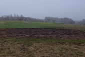

<div class="pages">
  <div data-page="570-6-tee-51-55-udvides" class="page navbar-fixed toolbar-fixed" >
    <div class="navbar">
      <div class="navbar-inner">
        <div class="left">
          <a href="#" class="link back icon-only"><i class="icon icon-back"></i></a>
          <!-- <a href="#" class="back link icon-only"><i class="icon icon-back"></i></a> -->
        </div>
        <div class="center">6. tee 51/55 udvides</div>
        <!-- <div class="right"></div> -->
        <div class="right">
        </div>
      </div>
    </div>
    <div class="page-content" style="padding-top:45px;">
       <div class="content-block">
          <p><b>Nyt hegn bag "Den Grå Hal</b></p>
          <center></center>
          <p>På samme måde som 17. huls tee 51/55 er belastet af et ekstra slid som følge af tee 55, så gælder det samme for 6. tee 51/55.
          <br /><br />
          Greenkeeperne er nu gået i gang med at udvide teestedet, så det bedre kan modstå sliddet og vi kan se frem til at kunne tage det i brug en gang i 2017.</p>
        </div>
    </div>
    </div>
    </div>
  </div>
</div>
